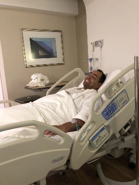
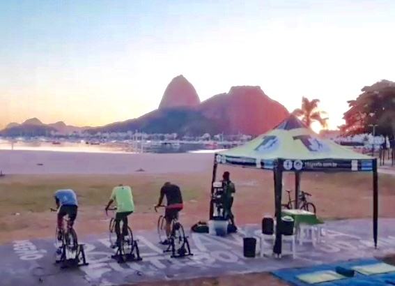
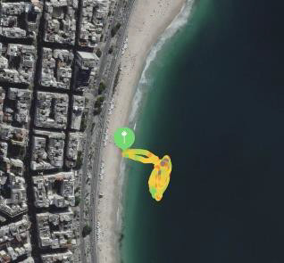
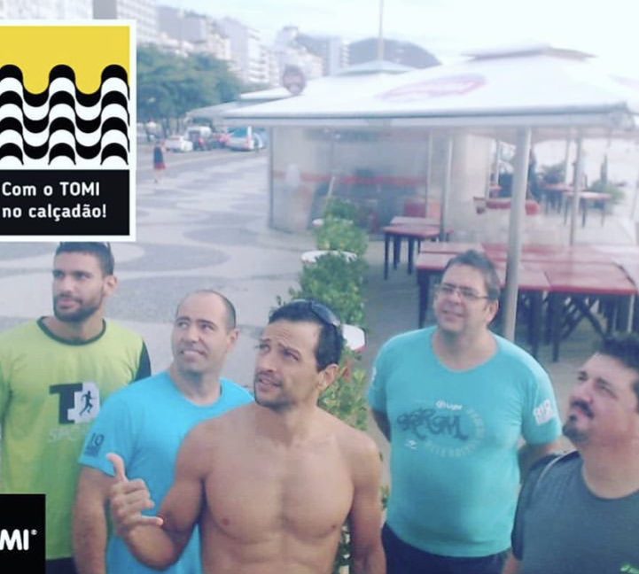
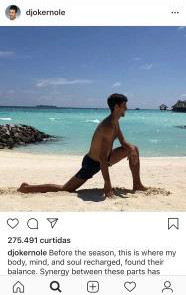

1 - Início da Caminhada
Em 2016 comecei a sentir umas fraquezas nas pernas e dormências, depois de mais de 1 ano e ter passado por alguns médicos, foi descoberta uma hérnia cervical, já bem evoluída comprimindo a medula. Depois de duas cirurgias, vi essa foto no CTI, e percebi que com 115 kg, dois filhos e quase 40 anos, não poderia brincar com a minha saúde e decidi emagrecer.
Com a dieta da Dra. Claudia Rozenfeld, basicamente uma dieta low carb, e com a liberação de atividade física do Dr. Paulo Niemeyer, meu neurocirurgião, comecei a fazer musculação de forma leve, e tentando retomar as corridas nas esteiras.
No final de julho já tinha perdido 10 kg e fazia algumas caminhas com pequenos trotes, mas ainda não tinha coragem de correr na rua.
A diminuição do peso só fez aumentar a minha disposição e querer voltar a correr. Engraçado falar em correr agora, pois me lembro como era difícil andar antes de fazer a cirurgia na cervical, minhas pernas não tinham mais força, e tentar correr para atravessar a rua era uma coisa estranha e parecia que as minhas pernas não respondiam.
Com o incentivo da minha esposa, que me mostrou um plano de corrida de 5 km do EU ATLETA, iniciei de forma gradativa a primeira meta, correr 5 km.
Em outubro de 2018, consegui correr os 5 km na esteira e resolvi entrar em contato com a assessoria de corrida T4 SPORTS, outrora a ajuda que tive em 2014 para fazer as corridas, mas que devido a um canelite não me deixou evoluir.
25/02/2019
2 - Primeiras Corridas
Quando eu procurei a ajuda do Tobias da T4SPORT meu objetivo era correr e continuar a perder peso. Logo na primeira semana vi que o fantasma da canelite não estava mais rondando, e eu já conseguia correr 4 km, mesmo que num ritmo lento. Minha primeira semana de corrida foi:
Terça – 10 min + educativo + 10 min
Quinta – 4 km com pace de 8 min/km. Na planilha de treino estava falando para fazer um intervalo de 1 min a cada km, mas eu não vi e fiz os 4 km diretos. Me senti o corredor hahahahha
Sexta (era para correr sábado) – 2 km direto 6 “tiros” de 200 metros (pace de 6,20) com intervalo de 45″
As semanas foram seguindo e o meu desempenho melhorando, e esse negócio de correr realmente vicia, lembro que teve um dia que era para correr 30 min na arreia (na minha primeira passagem pela corrida eu odiava esses treinos). Quando acordei estava chovendo, decidir então ir para a academia, mas olhei para a janela da academia e vi que a chuva tinha passado, não pensei duas vezes, larguei a musculação e parti para a praia de botafogo.
Mesmo sem a estrutura da T4, sem ter onde deixar as minhas coisas (casaco, chave, carteira, celular, etc.) fui fazer o meu treino. Corri 3 km na arreia, em 30 min.
(Treino dia 06/11/2018)
3 - Primeiro Desafio
Todo corredor gosta de uma prova para se motivar, então resolvi fazer a minha primeira. Meu amigo Victor me indicou uma corrida “diferente” de noite. Me inscrevi nos 5km da Run and Burn, minha primeira corrida de rua.
E bora treinar…… Final de ano é uma época horrível para treinar, vários eventos, viagens, mas não deixei a preguiça chegar e mantive os treinos.
Num final de semana fomos para o Hotel Le Canton, em Teresópolis, na planilha 7 km, até então a distância mais longa. Acordei cedo no sábado, e junto com um amigo fomos treinar, ele estava se preparando para os 21 km da Meia Maratona, mas decidiu fazer só o 7 km. Corremos sem conhecer o caminho, e entre subidas e descidas conclui os 7 k em 54:43, uma eternidade.
Nas semanas seguintes a dificuldade ia aumentar, nem tanto pelos km que tinha que fazer, mas sim pelas viagens. Uma semana antes da prova passamos o final de semana em Itaipava, comemorando o aniversário da minha sogra, e na planilha 8k. A minha sorte é que o meu cunhado que é triatleta amador (com dois 70.3 realizados) me levou para correr com ele, primeira corrida na estrada, carros e caminhões passando nas retas da BR-040. 8k em 58:33.
(25/02/2019)
4 - Run and Burn
Inscrição garantida, meta ousada de 5k em 30:00. Teve até um dia no treino que eu achei que ia conseguir fazer esse tempo, mera ilusão.
A prova não foi boa, muita gente no início, e como foi realizada na pista interna do parque do flamengo, ficou muito confuso e difícil passar as pessoas, além disso fiz uma estratégia errada, já começar a prova no pace de 6 min/km. Acabei correndo mais que os 5 km (devido a desvios dos corredores mais devagar) e não consegui manter o ritmo até o final.
Terminei a prova fazendo os 5,32 km em 35:24, mas o importante foi completar e correr com amigos.
Prova dia 15/12/2018 - (26/02/2019)
5 - Correr + Bike
Primeira prova concluída, volume de corrida aumentando, comecei a olhar a Caloi 10 da minha esposa com outros olhos.
Fazendo um parêntese para uma volta no passado. Já falei que a minha primeira passagem pelas corridas não evolui por causa da canelite, mas não falei que a minha esposa evoluiu muito, e além das corridas de 5km e 10km fez um Triathlon Sprint (750m de natação + 20km de ciclismo + 5km de corrida), claro que isso tudo foi antes de engravidar do nosso primeiro filho.
Agora dá pra saber o porquê tínhamos uma Caloi 10 parada em casa. Bom, olhei a bike ela me olhou e eu resolvi coloca-la para na revisão e começar a pedalar em 2019.
(19/03/2019)
6 - Não é só para Contar as Vitórias.
Bike revisada, bermuda de ciclismo, sapatilha nova, vamos pedalar no rolo. Não sou nenhum maluco de já começar a pedalar no APCC (área de proteção ao ciclista de competição), 30 minutos leve para sentir a bike.
Fui para a praia de Botafogo me achando o ciclista, já com a sapatilha presa no pedal (clipado), mas quando eu parei a bike, tirei um pé do pedal....... cai para o outro lado. Foi uma das piores sensações que eu já tive, você cai em câmera lenta, e não tem o que fazer.
Chegando no treino estava com o cotovelo sangrando e para piorar a minha vergonha todo mundo perguntava o que aconteceu.
Na volta eu fui empurrando a bicicleta mesmo, e nos outros treinos fui com o tênis e só colocava a sapatilha na praia de Botafogo.
Treino dia 10/01/2019
(19/03/2019)
7 - Quase um Triatleta
Só me faltava a natação para me sentir um triatleta.
Desde sempre tive dor no ombro, mas nada que me impedia de fazer musculação ou outras coisas, mas essas dores estavam muito fortes, talvez pela mudança da forma de dormir, mais sobre os ombros evitando dormir de bruços e prejudicar ainda mais a cervical.
Essas dores eram as únicas coisas que estavam me separando da natação e de começar a treinar para o triathlon.
Fui num osteopata indicado pelo treinador, e o cara era fera, já na primeira consulta viu onde era o problema (pouco alongamento no peito) passou uns exercícios para melhorar e de quebra uma série de musculação para fortalecer o corpo todo. Na semana seguinte eu fui ao clube dar umas braçadas, e vi que já estava bem melhor, consegui nadar 1.000 metros sem sentir dor.
Treino dia 17/01/2019
Colocamos a natação nos treinos e comecei a nadar na praia de Copacabana, me senti mais confortável nadando no mar, talvez pela roupa de borracha que me deu mais flutuabilidade.
 
Treino dia 15/02/2019
(19/03/2019)
8 - Dor....
Nos treinos de maior distância, comecei a sentir uma dor na coxa nos quilômetros finais, achava que essas dores eram normais, até que um dia, num treino de 7km próximo da metade, senti a dor um pouco mais forte que o normal. Interrompi o treino e voltei andando (oh coisa mais chata…). Na primeira oportunidade liguei para o osteopata.
Resumindo não era nada, só o músculo se acostumando com o novo estímulo da bike e aprendi uns alongamentos novos.
O mais bacana é que vi no Instagram o Djokovic fazendo o mesmo alongamento. Acho que esse negócio funciona.
Treino dia 23/01/2019
(22/03/2019)
9 - APCC – 4:00 am
Conversando com alguns amigos de outras acessórias, eles sempre me falaram do APCC, pedalada no aterro do Flamengo de madrugada.
Depois de treinos no rolo, e de duas saídas para pedalar, uma em subindo a rua Alice e outra num domingo no aterro, resolvi de aventurar e debutar no APCC.
Treino de 1 hora/26 km, depois ainda teve 5km de corrida. Porque terça é dia de transição.
A parada é muito boa mesmo, além de você ficar motivadocom os outros ciclistas, ainda dá para ter uma noção de como é pedalar em prova.
A única coisa de me deu um “cagaço”, e ainda dá, é a ida para o aterro e principalmente a volta, onde tem muito carros na rua.
Acordar as 3:30 AM, para começar a treinar as 4:00am não é problema. O que foi difícil foi passar o dia todo acordado e ainda cuidar das crianças a noite.
Treino dia 29/01/2019
(23/03/2019)
10 - Fugindo da Planilha
Treino de sábado que virou de domingo. Corrida de 8km que acabou crescendo e se tornou meus primeiros 10km.
No primeiro filho se participa de tudo, todas as consultas pré-natal, consultas do pediatra, aulas de música, natação etc. Já o segundo as coisas já não são tão novidades e acabamos relevando algumas coisas. Por que eu estou falando isso se a história é sobre Triathlon e não sobre ser pai? Porque no sábado ia ser a aula experimental de natação da minha filha mais nova, e eu não queria perder. Então passei o treino de sábado para o domingo, programei para correr na lagoa Rodrigo de Freitas (7,5 km) e depois aproveitar o clube com a família.
Plano realizado. Vamos correr!! Mas uma coisa não saia da minha cabeça, se eu ia fazer 7,5km + 0,5km para completar os 8, por que não continuar mais um pouco e fazer 10k?
Passei cada km da lagoa pensando nisso, mas também ciente de que se não iria forçar só para fazer os 10km.
Consegui completar a lagoa, e continuar pra fazer os 10km. O ritmo desabou no final, principalmente nos 3 últimos quilômetros, mas tinha conseguido romper a barreira dos 10.
(Treino dia 03/02/2019)
- 6,26 min/km
- 6,32 min/km
- 6,28 min/km
- 6,17 min/km
- 6,53 min/km
- 7,06 min/km
- 6,42 min/km
- 7,11 min/km
- 7,17 min/km
- 7,43 min/km
(23/03/2019)